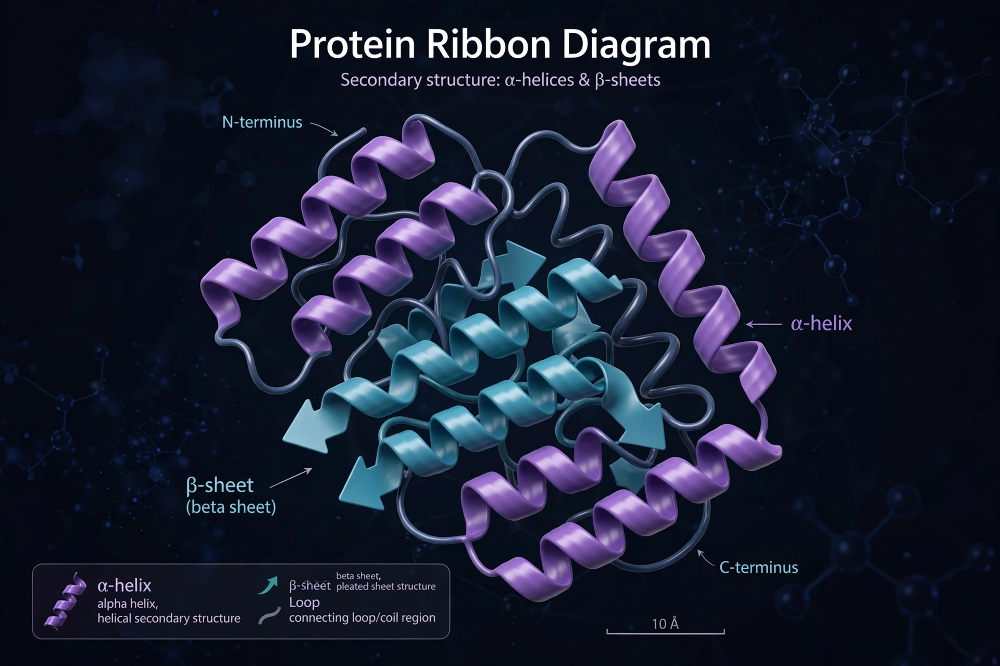

| Protein | |
|---|---|
 A ribbon representation of a protein's three-dimensional structure | |
| Composition | Chains of amino acid residues |
| Building blocks | 20 standard amino acids |
| Synthesis | Ribosomes, directed by messenger RNA |
| Average size | Tens to thousands of residues |
| Examples | Haemoglobin, insulin, antibodies, collagen, enzymes |
Proteins are large biomolecules and macromolecules comprising one or more long chains of amino acid residues. They perform a vast array of functions within organisms: catalysing metabolic reactions (as enzymes), replicating DNA, responding to stimuli, providing structure to cells and organisms, and transporting molecules.
Proteins differ from one another primarily in their sequence of amino acids, which is dictated by the nucleotide sequence of the genes encoding them, and which usually results in the chain folding into a specific three-dimensional structure that determines its activity. A linear chain of amino acid residues is called a polypeptide; a protein generally contains at least one long polypeptide.
Protein structure is conventionally described at four levels. Primary structure is the amino acid sequence. Secondary structure comprises locally folded patterns, chiefly α-helices and β-sheets, stabilised by hydrogen bonds. Tertiary structure is the overall three-dimensional shape of a single chain, driven largely by the hydrophobic effect and stabilised by interactions including disulfide bonds. Quaternary structure is the arrangement of multiple folded subunits into a complex, as in haemoglobin's four subunits.
How a chain reaches its native fold is the subject of protein folding; failure to fold correctly leads to inactive or toxic proteins implicated in diseases such as Alzheimer's and Parkinson's.
Proteins are assembled from amino acids by ribosomes using information encoded in genes. During and after translation, proteins often undergo post-translational modifications — phosphorylation, glycosylation, cleavage and others — that expand their functional repertoire far beyond the 20 standard amino acids directly encoded by DNA. Short proteins can also be made by chemical synthesis, which enables the introduction of unnatural amino acids.
Most biochemical reactions in cells are catalysed by enzymes, nearly all of which are proteins. Enzymes bind specific substrates at an active site and can accelerate reactions by many orders of magnitude; a cell may contain thousands of distinct enzymes mapping out its metabolic pathways.
Cytoskeletal proteins such as actin and tubulin give cells their shape and enable movement, while extracellular proteins such as collagen and elastin provide scaffolding in connective tissue. Keratin forms hair, nails and feathers.
Proteins serve as hormones (insulin), receptors, and membrane channels and transporters. Haemoglobin carries oxygen in the blood. Antibodies of the immune system are proteins that bind and neutralise foreign particles; the complement system and antimicrobial peptides extend this defensive role.
Proteins were first described by the Dutch chemist Gerardus Johannes Mulder and named by Jöns Jacob Berzelius in 1838, from the Greek prōteios, "primary". Their central role was not fully appreciated until the 20th century. Landmarks include Frederick Sanger's sequencing of insulin (1950s), the first three-dimensional structures — myoglobin by John Kendrew and haemoglobin by Max Perutz (1960) — and, in 2020, the solution of the protein structure prediction problem for most practical purposes by the deep-learning system AlphaFold2.
For humans, protein is an essential nutrient: digestion breaks dietary protein into amino acids, nine of which are essential and must be obtained from food. Major sources include meat, fish, eggs, dairy, legumes and grains. Recommended intake for adults is roughly 0.8 g per kilogram of body weight per day, with higher needs in growth, pregnancy and heavy training.